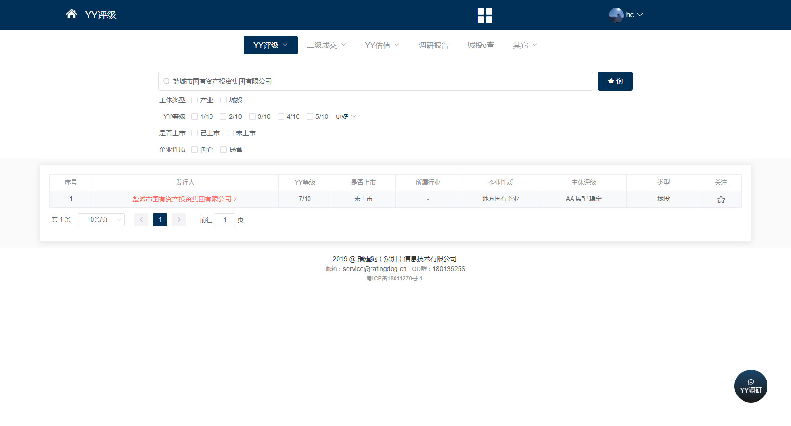

首页
产品及服务
信用服务
信用风险管理
债乎 CreditMaster
债券信用风险一站式管理
云瞻
消费金融数据风控
中证预鉴 CreditPortal
企业信用风险传导预警平台
信用增进
风险业务综合管理平台
集业务管理与风险管理为一体
中小微增信服务平台
助贷服务、资产服务
信用资产交易管理服务
Ratingdog
债券估值与定价
DealingMatrix
债券及同业报价
不良资产估值
不良资产估值辅助工具
基础服务
数据服务
DaaS
企业数据服务
功能服务
BaaS
中证区块链基础服务
解决方案
解决方案
证券
内部评级体系建设
投资者适当性管理
融资担保
融担业务综合管理
监管
私募基金风险管理
文档中心
关于我们
关于我们
了解信用云
联系我们
Ratingdog
Ratingdog以买方视角为固定收益投资者提供全方位信用投研服务，每日对当天一级发行的所有公募信用债发布信评定价报告，现已完成全市场公募发债主体全覆盖，并建立自有估值曲线和全市场存量信用债的估值。
联系我们
体验Ratingdog
应用场景
核心价值
功能服务
服务客户
体验使用
常见问题
应用场景
Scenarios
为机构投资者提供信用债投前、投中、投后全流程的咨询服务
为各类投资者提供专业的内部评级、风险管理、估值与定价等咨询服务，并提供研究支持、数据支持、模型建设支持和系统开发支持，辅助机构投资者投资、风控和信评等业务条线完善工作
助力机构投资者提升投研水平
利用Ratingdog团队丰富的投研经验和各类资源帮助投资者去重塑内部的信评体系、投研流程，通过Ratingdog提供工具帮助机构投资者提高投研工作的科技水平，如更加高效的舆情监测、市场跟踪、组合管理、信评系统等
应用场景
Scenarios
为机构投资者提供信用债投前、投中、投后全流程的咨询服务
为各类投资者提供专业的内部评级、风险管理、估值与定价等咨询服务，并提供研究支持、数据支持、模型建设支持和系统开发支持，辅助机构投资者投资、风控和信评等业务条线完善工作
助力机构投资者提升投研水平
利用Ratingdog团队丰富的投研经验和各类资源帮助投资者去重塑内部的信评体系、投研流程，通过Ratingdog提供工具帮助机构投资者提高投研工作的科技水平，如更加高效的舆情监测、市场跟踪、组合管理、信评系统等
核心价值
Value Proposition
信评的独立性和可验证性
以服务投资者为宗旨，客户利益与自身利益高度一致。自建估值曲线和个券估值体系并在市场的不断反馈与验证中完善，使信评结果和市场高度一致，便于投资快速使用
研究全市场覆盖
实现对全市场4000余发债主体的研究覆盖，评级结果和定价参考两年来公开发布，受到市场各大债券投资活跃机构的广泛使用和持续验证
复合的团队背景
Ratingdog团队兼具评级和买方实操经验，买方机构涵盖各大机构类型，包括公募基金、券商、银行、保险等，投资类型和投资范围基本覆盖全市场公开信用债，使团队能够拥有丰富的投研经验与多元化的投研视角，可以多角度审视客户需求，提供满足不同类型投资机构需求的服务与产品
融合经验与科技
将主观经验模型化、标准化，并通过科技手段不断提高信息获取和解读能力
多元化资源整合能力
广泛的机构投资者人脉，还与各债券一级承销机构、评级机构、数据库公司及第三方科技公司建立各类合作关系，使得团队对市场、行业的理解始终保持领先水平，并能够整合资源为客户提供多元化的服务
核心价值
Value Proposition
信评的独立性和可验证性
以服务投资者为宗旨，客户利益与自身利益高度一致。自建估值曲线和个券估值体系并在市场的不断反馈与验证中完善，使信评结果和市场高度一致，便于投资快速使用
研究全市场覆盖
实现对全市场4000余发债主体的研究覆盖，评级结果和定价参考两年来公开发布，受到市场各大债券投资活跃机构的广泛使用和持续验证
复合的团队背景
Ratingdog团队兼具评级和买方实操经验，买方机构涵盖各大机构类型，包括公募基金、券商、银行、保险等，投资类型和投资范围基本覆盖全市场公开信用债，使团队能够拥有丰富的投研经验与多元化的投研视角，可以多角度审视客户需求，提供满足不同类型投资机构需求的服务与产品
融合经验与科技
将主观经验模型化、标准化，并通过科技手段不断提高信息获取和解读能力
多元化资源整合能力
广泛的机构投资者人脉，还与各债券一级承销机构、评级机构、数据库公司及第三方科技公司建立各类合作关系，使得团队对市场、行业的理解始终保持领先水平，并能够整合资源为客户提供多元化的服务
功能服务
Functionality
研究
公司研究
对所有发债主体，提供行业分类、点评、简评报告、深度报告等
行业研究
行业信评模型、行业基本面动态、行业隐形评级等
市场研究
新债日评、二级成交分析、月度市场回顾、年度策略展望等
市场预警
市场价格预警、隐含评级变动预警
数据
估值/曲线/指数
提供全覆盖的公募债券估值、垃圾债估值、YY指数等
发行/成交
一级发行、二级成交数据
城投数据
省、市、县（区）开发区（高新区）四级发债区域经济、财政、负债率数据
系统
标准化系统
包括流程管理、报告生产、模型打分、个券定价/估值、预警监测等
个性化模块
根据客户需求，个性化提供系统子模块
咨询
可投库搭建
根据收益目标、资金属性、投资限制等，定制投资规则和可投债券库
持仓预警/点评
针对债券持仓，实时提供各类预警、点评等
模型咨询
信评、估值、定价、行业利差、曲线、指数构建等
系统咨询
系统搭建、实施以及迭代方案
培训服务
基础知识、投研实践、信用策略等
功能服务
Functionality
研究
公司研究
对所有发债主体，提供行业分类、点评、简评报告、深度报告等
行业研究
行业信评模型、行业基本面动态、行业隐形评级等
市场研究
新债日评、二级成交分析、月度市场回顾、年度策略展望等
市场预警
市场价格预警、隐含评级变动预警
数据
估值/曲线/指数
提供全覆盖的公募债券估值、垃圾债估值、YY指数等
发行/成交
一级发行、二级成交数据
城投数据
省、市、县（区）开发区（高新区）四级发债区域经济、财政、负债率数据
系统
标准化系统
包括流程管理、报告生产、模型打分、个券定价/估值、预警监测等
个性化模块
根据客户需求，个性化提供系统子模块
咨询
可投库搭建
根据收益目标、资金属性、投资限制等，定制投资规则和可投债券库
持仓预警/点评
针对债券持仓，实时提供各类预警、点评等
模型咨询
信评、估值、定价、行业利差、曲线、指数构建等
系统咨询
系统搭建、实施以及迭代方案
培训服务
基础知识、投研实践、信用策略等
服务客户
Success Stories
某银行
某基金
某保险资管
某大型券商
服务内容
根据该客户的具体风险要求，明确搭建规则和要素，搭建符合该客户需求的可投库，协助该客户从投前端做好信用风险管理。
服务内容
针对该客户投资过程中具体债项或主体，提供主体评价报告或风险点评报告。协助该客户实时深入了解投资标的的信用风险和估值风险，更好做出投资决策。
服务内容
针对全市场存续及新发信用债提供Ratingdog研究支持数据库，并将全量数据与该客户内部投资管理系统进行对接，为该客户的内评流程和投资决策提供第三方意见参考。
服务内容
针对该客户明确提出的高收益债相关投资需求，为其提供市场上部分投资标的分析，作为投资参考。
服务客户
Success Stories
某银行
服务内容
根据该客户的具体风险要求，明确搭建规则和要素，搭建符合该客户需求的可投库，协助该客户从投前端做好信用风险管理。
某基金
服务内容
针对该客户投资过程中具体债项或主体，提供主体评价报告或风险点评报告。协助该客户实时深入了解投资标的的信用风险和估值风险，更好做出投资决策。
某保险资管
服务内容
针对全市场存续及新发信用债提供Ratingdog研究支持数据库，并将全量数据与该客户内部投资管理系统进行对接，为该客户的内评流程和投资决策提供第三方意见参考。
某大型券商
服务内容
针对该客户明确提出的高收益债相关投资需求，为其提供市场上部分投资标的分析，作为投资参考。
体验使用
Trial
Ratingdog为固定收益投资者提供全方位信用投研服务包括：
YY新债：对市场每日新发产业债和城投债提供分析和定价参考报告。当日回溯前一日一级发行和二级成交情况。
YY评级：对全市场公募发债主体提供评级查询和专家点评。
YY估值：通过自建估值曲线，实现对全市场存量信用债的估值。
成交数据：提供二级中介成交数据和前台数据查询。
YY报告：不定期上传各区域、各行业、各主体的尽调报告。
体验Ratingdog

体验使用
Trial
Ratingdog为固定收益投资者提供全方位信用投研服务包括：
YY新债：对市场每日新发产业债和城投债提供分析和定价参考报告。当日回溯前一日一级发行和二级成交情况。
YY评级：对全市场公募发债主体提供评级查询和专家点评。
YY估值：通过自建估值曲线，实现对全市场存量信用债的估值。
成交数据：提供二级中介成交数据和前台数据查询。
YY报告：不定期上传各区域、各行业、各主体的尽调报告。
体验Ratingdog
常见问题
FAQs
Q1: YY评级具体在投资过程中如何使用？
A: 依据我们的观察和实践，评级1-4属于高等级主体，信用风险很小。评级5仍属于投资级别主体，但需要考虑企业性质、行业趋势，衡量性价比。评级6信用风险略大，城投和国企可以博一下收益，对于民企需要仔细考虑利率保护是否足够，在市场风险偏好大幅变化时，该级别的利率波动幅度往往较大。评级7-10多存在信用瑕疵，以规避为主。
Q2: Ratingdog的标准化产品和定制化服务有何差异？
A: 标准化产品可提供基础的信用债评级、简评、估值等信息参考；定制化服务可依据客户的负债情况、收益需求、投资偏好等具体要素，提供更有针对性、更加深入的服务，协助客户解决固定收益投资中全流程中的各项问题。
联
系
我
们